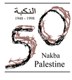

The Catastrophe: al-Nakba

The Nakba (Catastrophe), the 1948 war, meant the expulsion and dispossession of the Palestinians. The aim of its commemoration is to underscore the role of the Palestinians in protecting the national aims, goals and aspirations, 50 years ago after the dispossession and the expulsion of the Palestinian people began in 1948 in the wake of an-Nakba.
Making the voice of Palestine heard, united and resonant, on this day is a political message of the first order delivered to the world at a time of growing and rampant Israeli racism, ethnic cleansing and intransigence.
Half a century after the 1948 Catastrophe, Palestinians are revisiting their sorrows. For Palestinians this is a time to try to extract lessons from the Catastrophe that demolished their homeland and scattered the vast majority of Palestinian refugees.
Palestinian commemoration of the Catastrophe is being characterized with the absence of lament. Yet the sad color cannot be disregarded. The Deir Yassin Massacre was but the first episode in a long series of massacres such as Qabia, Kufr Qassem, Dawaymeh and Nahalir through the Sabra and Shatila and Ibrahimi Mosque massacres. Such genocidal tactics have been adopted throughout modern Palestinian history, even by Arab regimes towards refugee camps, especially during the 1970s.
It is not only a commemoration of a past history. Ethnic cleansing, dispossession is continuing today. New jewish colonies are build, Palestine is taken from its people. The Palestinian Catastrophe continues.
The expulsion and dispossession of the Palestinians is one of the most significant events in the 20th century. This is not because of its size or its brutality, but because it stands as the starkest early warning of a calculated depopulation of over 400 Palestinian villages and cities and the expulsion of more than 700,000 Palestinian inhabitants to make room for the Jewish state,...built upon the ruins of Palestine.
 Links:
- Al-Nakba
- Khalil Sakakini Center
- American Committee for Jerusalem
- Arab-American Anti-Discrimination Comittee
- The Alternative Information Center
- Birzeit University's Center for Research & Documentation
- Inaash al Usra Society
- The Institute for Palestine Studies (IPS)
- Palestine & the UN
- Shaml: Palestinian Diaspora & Refugee Center
- UNRWA